RPD
- Support
- rest
- indirect retainer
- denture base
- major connector
- Retention
- direct retainers
- Stability
- proximal plate
- major connector
- minor connector
- lingual plate
- reciprocal arm
- denture base
- rigid components in contact with tooth surfaces
Abutment
用來支撐、固持、或穩定局部義齒 的天然牙或植體
- Primary: 與無牙區接觸
- Secondary: 只跟義齒接觸
Retention
- 抵抗 Vertical force of dislodgment (脫位)
- Stress breaking Design
- 讓 Abutment 與 Base 受力時能獨立運動，避免力量全集中在 Abutment
Direct Retainer
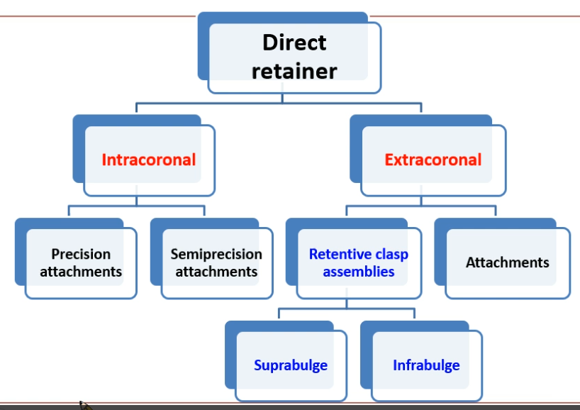- attachments
- 美觀
- 穩定
- Abutment 力矩小 (力量接近旋轉中心)
- Abutment teeth 需要 4-6mm
- 設計複雜損失齒質
- 需要良好 Oral hygiene
Intracoronal

- 一般要 Endo
- Abutment 受力大 → 要 Splint 在一起
- 分類
- Precision attachments: CNC 切削 Matrix, Patrix
- Semiprecision: Casting
Extracoronal attachments
- 牙齒 Prepare 做牙套，現今多用 Implant 當 Abutment
- Abutment 受力大 → 要 Splint 在一起
- Joint 可以移動 → 緩衝
- 塑膠的 Matrix 可更換，也有彈性能達到 Stress breaker
Clasp
- 根據牙鉤從上或下鉤分成 Suprabulge(Circumferential), Infrabulge
Clasp Design
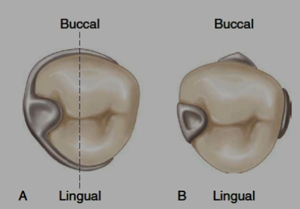-
Rest
-
Encirclement: >180°
-
Reciprocal Component (stability)
-
Distal extension 要考慮 Stress breaking Design
-
盡量少 (一般放三顆 Abutment teeth 就足夠)
-
Gingiva third 以下是 Retention，以上是 Stability
Akers clasp
- Suprabulge
- 分區
- Shoulder (S)：從 origin 伸出來的部分，有穩定及包覆功能，體積最大且彈性最不好(rigid)。
- Midsection(M)：位於中段，粗細程度與彈性處於中間值(relatively flexible)
- Terminus(T)：位於最末段，進入 undercut 以下，所以需要最細且彈性也最好(flexible)
- 要維持鉤子形狀才有彈性，能調整
- Preparation (理想:G)
Cast Circumferential clasp
傳統經典
- Rest, Akers clasp, Reciprocal
- 鑄造
- 半圓
- 難以調整
- 耐用
- 缺乏 Stress breaking
Reverse circlet clasp
- Mesial 往 DB 勾的 Cast Circumferential clasp ，適合 Distal ext.
Ring clasp
- 勾 ML
- 用於 Mesial tilting Molar
- 用於 Md. Molar (Buccal 無 under cut) →
- Supporting strut
- 需要深 Vestibular
- 軟組織倒凹不適用
- Second rest
Embrasure clasp
- 一組鄰牙兩對 Retentive arm & Reciprocal arm，通常 Retentive arm 會一個 Buccal 一個 Lingual
- 適用於 Class II 缺牙
- Lingual side 的 minor connector 薄，容易咬到，斷掉
- 不適合放在有 Distal ext. 側 (右圖)，因為無 Stress breaking
Multiple clasp
- 兩個 Akers arm，舌側Reciprocal arm 連在一起
- 用於 #4 牙周不佳，以 Dual retention 分散受力
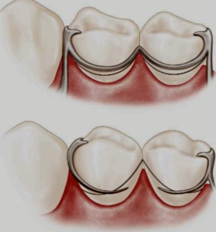
Half-and-half clasp
- 一顆 Abutment tooth 兩根 Akers arm，點對稱
- Dual retention
Reverse action clasp (C clasp)
- Rest + C clasp + reciprocal
- DB出發，繞一圈勾 DB under cut
- Abutment 需要夠高
- 低彈性
Back-Action clasp
- ML line angle 出發，勾到 Buccal
- 用於舌側無倒凹
- Retention 和 Reciprocal 對抗不足 → 不穩定
- stress-breaking
- 不能用在單側 RPD
Reverse Back-action clasp
- MB 出發 C-shaped clasp ，勾 ML
Onlay clasp
- 重建咬合平面
- 磨對牙
- Caries++
整理
- 只有 DB 有 undercut:
- infrabulge/bar-type > reverse circlet > c-clasp
Distal ext. stress breaking
四種設計
- wrought-wire circumferential clasp
- bar-type/infrabulge clasp
- RPI(rest, proximal plate, I-bar)
- RPA(rest, proximalplate, Aker’s/suprabulge clasp)
wrought-wire circumferential clasp
- 鍛造金屬(wrought-wire)
- 熱處理過，容易斷
- 彈性最好，易變形 → 少數能放進 0.5mm undercut
- 一般用 Stainless，Round 18-gauge (1mm)
- 可以用 Cast 的 Reciprocal arm (combination clasp)
Bar retainer
- 用推的作用位置近旋轉中心 → 力矩小，效率高 (6-27N)
- bar 離 Gingiva margin 4mm
- 美觀優於 Suprabulge
- 接近 Denture border → Bar 受保護
- 限制
- Abutment tooth 過度 Lingual tilts
- Soft tissue undercuts
- Shallow buccal Vestibular
- Frenum (頰繫帶)
T-clasp (Roach clasp )
- Infrabulge
- 只勾 DB line angle，以抵抗 Distal rest 中心的旋轉
Modify T-clasp
- T 去除 Mesial bar 以求美觀
Y-clasp
- 比較長的 T (也許是用在 survey line 過高)
I-clasp
- Mesial rest， 避免拔牙效應
Swing-lock denture
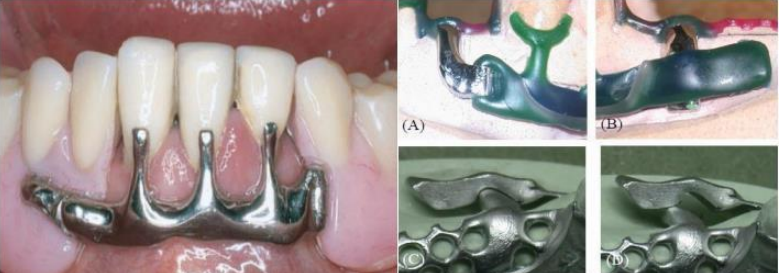- Retention: 門牙 I Bar + Labial bar
- Buccal Vestibular 6-8mm
- 下顎剩下門牙使用
RPI
rest, proximal plate, I bar, lingual bar
-
Mesial occlusal rest
- 連接 minor connector
- Rest, minor connector 不接觸到臨牙
-
Proximal plate minor connector
- 由上往下到 Mid, Cervical third 交界 (2-4mm)
- 盡量 舌側延伸，必免往舌側翻 (Buccal 有 I Bar)
 |
 |
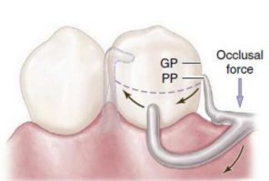 |
|---|---|---|
| Dr. Kratochvil FJ. 1963 穩定，無 Stress breaking |
✓ | 壓在 Alveolar crest |
-
I bar
- 離開 Gingiva margin 4mm
- Vestibular 空間(4mm)
- 越過 Height of contour，Stability & retention
- Retention 區域約 2mm
-
不接觸 Lingual
- 解決下顎 Lingual 的 survey line 很高
-
一定要配 lingual bar
-
缺點
- I bar 所需 undercut 過低會壓迫牙齦或難以進入
Kratochvil v.s.Krol
| 特徵 | Kratochvil(1963) | Krol(1973) |
|---|---|---|
| Proximal Plate | 接觸面積大(Marginal Ridge ↔ Gingival Margin 上方) | 接觸面積小，末端與Gingival有 2-3 mm 間隙 |
| 旨在填滿空間，防止食物嵌塞。 | 避免壓迫 FG | |
| Physiologic Adjustment | 削除Proximal Plate 不當壓力的區域，允許Base 沉降時以Rest 為軸心旋轉 | 不需要，Proximal Plate 間隙已經能減壓 |
| I-bar | - | 3mm clearance |
| 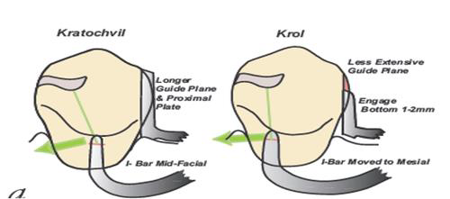 | ||
RPA
rest, proximal plate, Akers clasp(modified), lingual bar
- RPA v.s. Akers
- RPA 整個 clasp 都在 Undercut 下面， Akers 是 Suprabulge
- RPA 接觸牙齒處只有一條線和 Undercut
- Cast 要用蠟 Block out
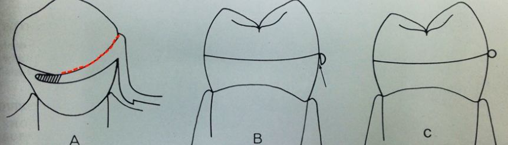
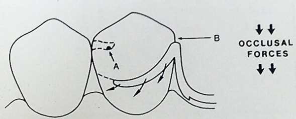
- Cast 要用蠟 Block out
- 一定要配 lingual bar
Indirect retainer
- fulcrum line: Rest/ abutment 連線
- Inderect retainer 離 Rest 越遠，抗旋轉越好
- 一般在 first premolar
Auxiliary occlusal rest
- 就是多一個 Rest
Canine rest/ incisal rest
- premolar 太接近 Fulcrum line 時使用
- cingulum, Incisor 都行
- Incisor 影響美觀
- Cingulum 最常用於上顎犬齒，Enamel 夠厚
- MD:2.5mm 與深1.5mm
Canine extensions from occlusal rest
- Rest 從 Premolar 延伸到 Canine cingulum
- Class I, II (沒後牙適用)
Instant
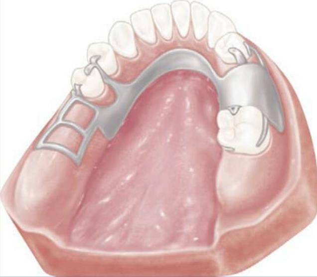- #44 的 Rest 同時是 Inderect retainer
- embrasure rest → two clasp
- 中圖
- Canine: Inderect retainer
- Molar: embrasure rest
- Second premolar: mesial rest, Infra budge
- Cons:
- embrasure rest 容易斷掉
- 右圖 Better
- mesial rest 改 distal: fulcrum line 遠離
- embrasure rest , Inderect retainer 改成 兩組 Clasp
- 增加 retention, stability
- 分散受力
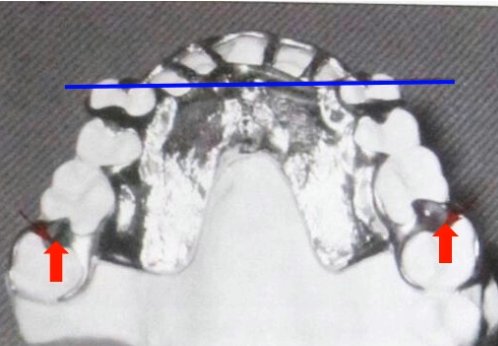
- Class IV
- 為了增加 Inderect retainer 距離，選擇 MO resst at 2nd Molar
Denture Base
- landmark
- maxillary tuberosities
- hamular notch
- retromolar pads
- retromylohyoid fossae
- Distortion of tissue
- 解法: 印模的時候用力把 soft tissue 往下壓
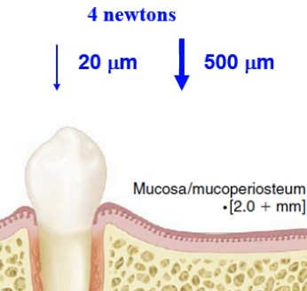
- 解法: 印模的時候用力把 soft tissue 往下壓
distal extension
- residual ridge 面積越大越好
- Support 效果受到bone, Soft tissue 影響
- 下顎骨拔牙後容易失去 cortical bone
| Mx | Md | |
|---|---|---|
| 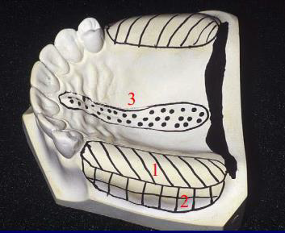. | 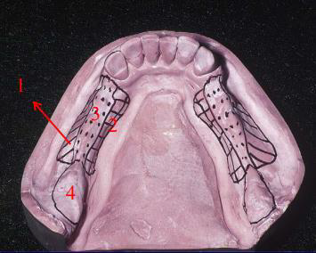. | |
| 解剖型態 | 皮質骨多、Mucosa較Firm | 海綿骨多 |
| 主要受力區(1) | The Crest of the Residual Ridge | Buccal Shelf Regions |
| 次要受力區(2) | Buccal and Lingual Slopes | Lingual slopes of the residual ridge |
| relief(3) | Incisive Papilla | The Crest of the Residual Ridge |
| Median Palatal Raphe | ||
| 可受力區(4) | / | 要延伸到Retromolar pads |
穩定Denture Base受力軌跡
-
受力運動軌跡垂直，避免 Mucosa 受傷
-
Rest 往前，半旋轉徑變大，受力更垂直
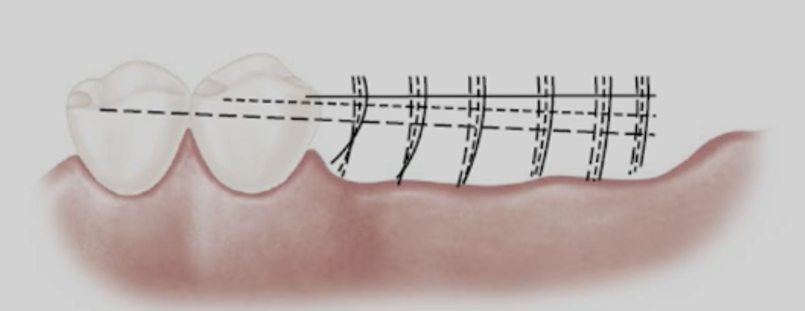 -
Indrect retainer 限制 Denture Base
- Denture Base 不能 Overextension
Stability
- 金屬材夠硬，有 Stability
- 只是一份調查
- 下顎大多是 Class I, II
- 增加抗力臂
- 抗力臂長 ↑ → abutment tooth 受力 ↓ → stability ↑
Class I
- R2>R1
- 拔牙效應
- 要 Stress breaking
- Wrought Wire
- 不能 Cast circumferential retainer
Rotation
Rotation about an fulcrum lines
不會在 Soft tissue 上水平移動，力量雖大，傷害相對小
- Resistant
- Retentive clasp
- Minor connector
- Indirect retainer
Rotation about the crest of the residual ridge
- Resistant
- major and minor connectors
Rotation about center vertical axis
- Resistant
- reciprocal arms
- major and minor connectors
Guiding plane
- 垂直 2-4mm
- Distal Ext. 考量 Stress breaking，只需 1.5-2mm
- Reciprocal arms
- 只有 retentive arm 接觸會產生側向力 → 修磨 Guiding 確保 Reciprocal arms 同時接處
- 無法磨出適合的 Guiding plane 也能用 lingual plate
- 前牙缺牙
- 能減少 undercuts 避免塞東西
整理表
Connector
- 距離 gingival margin
- Mx. 6mm
- Md. 3mm
Maxillary Major connector
- Bead line
- 直接壓 tissue
- 避開 torus
- 厚度 0.5-1mm
- 提供 Cast 修磨時完整 Finish line
- 金屬收縮後仍能貼附 Tissue 防止食物進入
- retention and stability
Palatal bar
- 剖面半橢圓形，最厚在中間
- 厚度寬度限制 → 強度差，support 很小
- 只用於 Crest 短 Class III
- palatal bar 不超過 2nd premolar 前方，否則異物感，
舌頭常常碰到，影響發音
Palatal strap
- AP> 8mm
- palatal bar 升級版
- Stability++, Support ++
- 可用於 Class II, III
- 不要放到 Rugae 、軟齶、gingival margin
- 有 L-beam principle (下圖)
- 跨兩面
- Distance ↓, Thickness ↑ → flexure ↓
Anteroposterior palatal bar (A-P bar)
- 前後兩 Bar ，前方較扁，類似 Strap
- L-beam
- Palatal bar 不超過 2nd premolar 前方
- 干擾發音、Support 不足
Horseshoe connector
- 長度長，flexible ↑
- 加寬：覆蓋到前牙 palatal side，並向palatal side 延伸6~8mm
- 加厚：anterior palate 加厚
- 兩側的ending 一定要對稱等高
- 用在前牙有 Modification 的 case
Anteroposterior palatal strap(A-P strap)
- 前後兩條 Strap
- AP>8mm
- 不蓋 rugae
- L-beam
- Stability > AP bar
Complete palate
-
不能蓋到 Soft palate
-
L-Beam
-
兩種設計
- 延伸到前牙 cingulum ，提供indirect retention
- 緊密接觸前牙 FG，否則行程 Death space，牙齦增生
- 離前牙的marginal gingivae >6mm 以利清潔
- 延伸到前牙 cingulum ，提供indirect retention
-
適用
- 全部後牙缺失
- 牙周不佳
- 可以追加樹脂牙，容易 repair
-
缺點
- 重 (upper)
- gag reflex(嘔吐感)
Modification of Complete Palate
- 重 → 金屬網格打洞
- gag reflex → Distal 用 Resin 收尾 (好修磨)
整理
torus 有 Relief 還是能 Complete Palate
Mandible Major Connector
- 不用 Beam line
- 下顎 RPD 容易發生 Rotation → Major connector 需要 Relief
Lingual Bar
- 首選
- 需要 Marginal ↔ 口底 8mm (3+5)
- 上窄下寬
Sublingual bar
- bar 水平橫躺於口底
- 影響舌頭擺放
- 印模技術求很高，故少見
Lingual plate
-
下寬上窄
-
蓋住 cingulum, Interproximal spaces
- 避免食物卡在縫隙
- 如果牙周問題嚴重，Interproximal spaces 改用 Step-back design (只到 Line angle)
-
要放 Rest 避免推前牙 ( 1st premolar, mesial)
-
能避開 torus
-
之後缺牙可以 Repair，增加樹脂牙
Dental Bar
- 放牙齒上，細 → 加厚，但要避免異物感 → 強度仍不如 Lingual plate
Double lingual bar (Kennedy bar/continuous clasp)
- 類似 AP Bar
- 鏤空
- 軟組織受到更多口水和食物的刺激
- 避開 Black triangle → 美觀
- 截面
- Lower bar：半梨形
- upper bar：半橢圓形，高 2~3mm，厚1mm
- Rest: 1st Premolar, mesial
- 缺點
- 形狀復雜，卡殘渣
- Upper bar 類似 Dental Bar ，乾擾舌頭
Labial Bar
- 長 → flexibility ↑ → 加寬加厚
- 適用於
- 錯位牙 (malpositioned teeth)、
- 牙齒 Lingual tilts 嚴重患者
- 有大 madibular torus 而無法使用 lingual bar/ plate 者
Swing-Lock RPD (改良式labial bar)
- Buccal 扣起來
- Stability++
Minor connector
- 可分為四大類，設計上越簡單越好
- clasp ↔ Major connector
- 不能放到 undercut 以下
- 不能放到 Lingual 最凸點，否則有旋轉效果
- indirect retainers/ auxiliary rests ↔ Major connector
- 藏 Embrasure 內
- 牙齦最小接觸：垂直主連接體
- denture base ↔ Major Connector
- Rigid
- 不要干擾義齒排牙
- 上顎：超過tuberosity
- 下顎：超過distal free end 2/3
-
- Finish line
- 設計分三種
- 釘頭
- 金屬貼 Tissue，導熱好，易清潔
- Resin 不牢固
- crest 萎縮無法調整 → class III, short span, tooth supported RPD
- 開放式結構
- 縱軸不能在 Crest
- 橫軸在牙齒之間
- 要有 Stopper，防止resin 壓鑄過程Mesh變形
- 網狀結構
- 義齒齒頸部被網狀結構干擾
- 堅固 → 可以最薄
- vertical projection/bar-type clasps ↔ Major Connector
- flexibility
- clasp ↔ Major connector
Block out
Master cast 做完 Block out 才能去翻耐火模
Parallel block out
- 依照 path of insertion
- 6個要做平行封凹
| Parallel block out | Thickness | Material |
|---|---|---|
| guiding planes (Proximal) | 只有析量刀與牙面接觸點之下的倒凹 | Hard baseplate wax or blockout material |
| minor connectors下方 | ||
| connectors 所跨越過的組織倒凹 | 只有析量刀與牙模型表面接觸點 之下的倒凹 | |
| minor connectors or lingual plates所覆蓋的鄰接縫隙 | ||
| Bar clasp 起點所跨越過的組織倒凹 | ||
| bar clasp arms to gingival crevice | 僅牙鉤臂附著於 小連接體所包含的倒凹 | - |
Shaped block out
- 在牙齒之頰及舌側面，用來定位牙鉤臂的蠟型
- 為了特定 clasp 功能，常用於 I bar, RPI clasp, RPA clasp
- Thickness
- 定位 Retentive Arms: 盡量接近齒頸部位
- 定位 Reciprocal arms: 順者 Height of contour
- I bar 進入倒凹區時，會在牙齦邊緣處做「斜面狀」或「凹弧狀」的 shaped block out，讓金屬能順利滑過軟組織、不壓迫牙齦。
- Material: Hard baseplate wax
Arbitrary block out
- 方便鑄造與脫模，而非改變義齒設計
- 較大面積或深倒凹時可搭配 oil-based clay 以填平。
| Arbitrary block out | Thickness | Material | 備註 |
|---|---|---|---|
| 所有牙齦溝 | 牙齦溝適度平順 | Hard baseplate wax | 避免金屬框架壓迫牙齦緣 |
| denture framework 下方的大範圍組織倒凹 | 以蠟刀任意填平 | Hard baseplate wax 或 oil-based clay | 防止倒凹造成脫模困難 |
| denture framework distal 組織倒凹 | 常見於終末 abutment teeth diatal 組織處 | ||
| 未包含於義齒設計的Buccal 牙齒及組織倒凹 | 填平至Coronal third ↑ | 修整非功能性倒凹區以利脫模 |
Relief
- 刻意留出空間避免壓迫組織
| 區域 / 適應情況 | Thickness | Material |
|---|---|---|
| lingual bar/plates 下 |
|
Adhesive wax |
| major connectors 會接觸的軟薄組織區：Md. Lingual 骨嵴, palatal raphes | 薄薄一層蠟 | Hard baseplate wax |
| Denture base framework 附著在 Resin 上方部分 | 20 gauge wax | Adhesive Wax |
Reline, Rebase and Repair
-
Relining: 換一層表面，臨床常做
-
Rebasing: 送技工，整個base 換掉
-
診斷
- 通常是患者開始抱怨塞東西、不穩
- Denture Base 位置改變
- 手壓 distal ext.，Indirect retainer 翹 >2mm
- Fit checker
Reline
- Intraoral direct relining
- 把材料送進口中然後咬起來
- 優點：操作方便，不用送技工
- 缺點：reline 的材料穩定性較差、孔洞多，易卡髒東西
- A closed-mouth functional impression
- impression 再 Packing
- 戴上 framework 後讓患者咬起來，咬合上的掌控比較精準。
- 適應
- Rebase
- 軟組織變化量大，需要 reline 的量較多
- 優點：因為是用 packing 的方式，reline 的材料穩定性佳、緻密性高
- An open-mouth selective functional impression
- 同上，但不咬起來
- 咬合會改變
- 適應
- easily displaced mucosa
- easily displaced mucosa
Effect
Ozan et.al.(2013)
缺牙五年後的垂直高度比較
- 缺牙沒戴活動義齒(高度差將近 6 mm，22.7%)
- 無牙區：21.4±2.5 mm
- 對側有牙區:27.2±2.4 mm
- 缺牙有戴活動義齒(高度差 7.6 mm，28.8%)
- 無牙區：19.6±2.5 mm
- 對側有牙區：27.2±2.3 mm
Preparation
Rest
Extended occlusal rest
- Md:>
- BL:
- OC: 1mm
- Support ↑ 但 Torch ↑
- 僅能用在有 Denture Base 抵銷 Torch 的情況
- Class I, II
Occlusal rests
- Marginal ridge
- 深度 1.5mm
- BL 2.5mm ()
- MD: -
Incisal rest
- buccal 和 lingual 都要做 bevel,提供空間給
- 寬 2.5mm
- 深 1.5mm
Lingual/Cingulum rests
- BL: 2mm
- MD: 2.5~3mm
- OC: 1.5mm
其中烤
長度
- Major cont. ↔ FG margin
- Mx.: 6mm
- Md.: 3mm
- Bead line
- 深度: 0.5-1mm
- Vestibular for lingual bar: 8mm
- GP 接處 Abutment
- 寬 3-4mm (<1/3 BL)
- 高 2-4mm (<1/2 CO>)
- Distal ext. 考量 Stress breaking，只需 1.5-2mm
- Relief
- Lingual bar: 32 gauge
- Other : 20 gauge
- Palatal strap
- AP> 8mm
- Horseshoe connector
- 覆蓋到前牙 palatal side，並向palatal side 延伸6~8mm
- I bar
- ↔ FG margin: 4mm
- Vestibular: 4mm
- 與牙齒接處 φ<2mm
- Undercut: .01 inch (0.25mm)
- wrought-wire clasp
- 常用18gauge: 1.0 mm
簡答
- 1.Major connector 設計的基本要求?
- 連接 RPD 部件
- 提供穩定性、Support
- 足夠剛性，避免在咀嚼時彎曲或變形，傳遞咬合受力
- 無毒、耐腐蝕，並與口腔組織相容。
- 舒適
- 易於清潔
其他
- Path of insertion
信不信由你
- surveyed crown
- 經過牙齒測量與導板設計（surveying）的特製冠
- 支台牙已有大範圍缺損或預備牙冠。
- 牙齒排列不整或有倒凹，需調整牙面以符合義齒設計。
- 希望增加支柱牙壽命，減少 RPD 對牙齒的扭力。